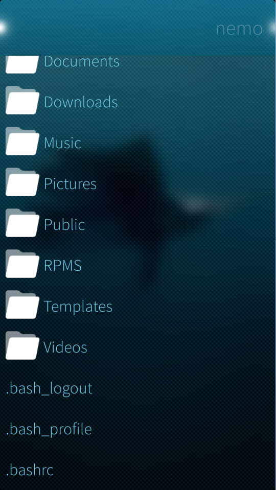

Allows files to be selected from the filesystem. More...
| Import Statement: | import SailfishWidgets.FileManagement . |
| Since: | Qt 5.0 |
Back to Sailfish Widgets
Displays a file system borwser that allows a user to select one or files or directories by visually selecting files that are stored in a ListView

It uses the Dir Qt object which provides the directory list and exposes some methods from QDir as Qml Properties
This widget inherits the properties and signals from Sailfish.Silica Dialog.
Qml Instantiates This dialog -------------> Qml DirectoryInfo (handles all operations) Sends back dynamically <-------------- list of QFiles matching request populates list view
Text property which is a file path that this Dialog should show at first. Defaults to Dir XdgHome
Text that should be displayed in the selection ContextMenu when deselecting a file.
An alias to the Dir object.
An alias to the Dir object.
An enum type that controls what file system types to display in the ListView. Uses the Dir DirFilter enum. You can chain enums using bitwise-or |. Its syntax follows that same as that of QDir::entryList.
Set this to false to force users to use the ListItem ContextMenu in order to select files. true by default to allow single type selection of files. Directories always require ContextMenu select.
An alias to an enum type that controls which elements can be selected. It uses the same enum as Dir DirFilter.
An enum type that controls the order of file system types to display in the ListView. Uses the Dir DirSort enum. You can chain enums using bitwise-or |. Its syntax follows that same as that of QDir::entryList.